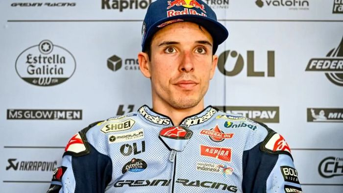

Alex Márquez
Alejandro Márquez Alentà (Cervera, Lérida, 23 de abril de 1996), más conocido como Álex Márquez, es un piloto de motociclismo español que compite en la «categoría reina» de MotoGP con el equipo Gresini Racing, donde obtuvo su primera victoria en el Gran Premio de España de 2025. Previamente compitió con los equipos Repsol Honda en 2020 y LCR Honda en 2021 y 2022. Ha ganado dos títulos del Campeonato del Mundo de Motociclismo (en Moto3 en 2014 y en Moto2 en 2019).

Informacion sobre el piloto:
- Fecha de nacimiento: 23-4-1996
- Lugar de nacimiento: Lérida, España
- Altura: 1,79m
- Peso: 64Kg
- Moto: Ducati
- Dorsal: 73
Equipos en los que ha competido el piloto:
- Moto GP:
- Repsol Honda Team
- LCR Honda
- Gresini Racing
- Moto 2:
- EG 0,0 Marc VDS
- Moto 3:
- Estrella Galicia 0,0
| Gran Premio | Posición de carrera | Puntos obtenidos |
|---|---|---|
| Catar | 6.º | 10 |
| Holanda | 8.º | 8 |
| Alemania | 3.º | 16 |
| Malasia | 4.º | 13 |
| Catalunya (GP Solidario) | 4.º | 13 |